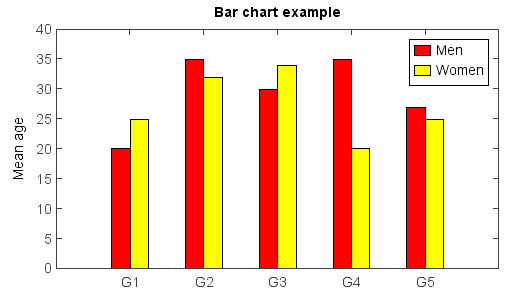

bar¶
-
mipylib.plotlib.miplot.bar(*args, **kwargs)¶ Make a bar plot.
- Make a bar plot with rectangles bounded by:
left, left + width, bottom, bottom + height
- Parameters
left – (array_like) The x coordinates of the left sides of the bars.
height – (array_like) The height of the bars.
width – (array_like) Optional, the widths of the bars default: 0.8.
bottom – (array_like) Optional, the y coordinates of the bars default: None
color – (Color) Optional, the color of the bar faces.
edgecolor – (Color) Optional, the color of the bar edge.
linewidth – (int) Optional, width of bar edge.
label – (string) Label of the bar series.
hatch – (string) Hatch string.
hatchsize – (int) Hatch size. Default is None (8).
bgcolor – (Color) Background color, only valid with hatch.
- Returns
Bar legend break.
- The following format string characters are accepted to control the hatch style:
Character
Description
‘-‘
horizontal hatch style
‘|’
vertical hatch style
‘'
forward_diagonal hatch style
‘/’
backward_diagonal hatch style
‘+’
cross hatch style
‘x’
diagonal_cross hatch style
‘.’
dot hatch style
Examples:
The bar width in the chart was decided automatically according to data series number.
menMeans = [20, 35, 30, 35, 27] n = len(menMeans) ind = arange(n) width = 0.2 bar(ind, menMeans, width, color='r', label='Men') womenMeans = [25, 32, 34, 20, 25] bar(ind + width, womenMeans, width, color='y', label='Women') xlim(-0.2, 4.6) ylim(0, 40) ylabel('Mean age') xticks(ind + width, ['G1','G2','G3','G4','G5']) legend() title('Bar chart example')
The bar width and plot position could be set manually with x array and width argument.
menMeans = [20, 35, 30, 35, 27] n = len(menMeans) ind = arange(n) width = 0.35 gap = 0.06 bar(ind, menMeans, width, color='r', label='Men') womenMeans = [25, 32, 34, 20, 25] bar(ind + width + gap, womenMeans, width, color='y', label='Women') xlim(-0.2, 5) ylim(0, 40) ylabel('Mean age') xticks(ind + width + gap / 2, ['G1','G2','G3','G4','G5']) legend() title('Bar chart example')

Hatch fill example using hatch argument:
menMeans = [20, 35, 30, 35, 27] std_men = (2, 3, 4, 1, 2) bar(menMeans, yerr=std_men, color='r', label='Men', hatch='-') womenMeans = [25, 32, 34, 20, 25] std_women = (3, 5, 2, 3, 3) bar(womenMeans, yerr=std_women, color='b', label='Women', hatch='\\') ylim(0, 40) ylabel('Mean age') xticks(arange(1, len(menMeans) + 1), ['G1','G2','G3','G4','G5']) legend() title('Bar chart example - Hatch')